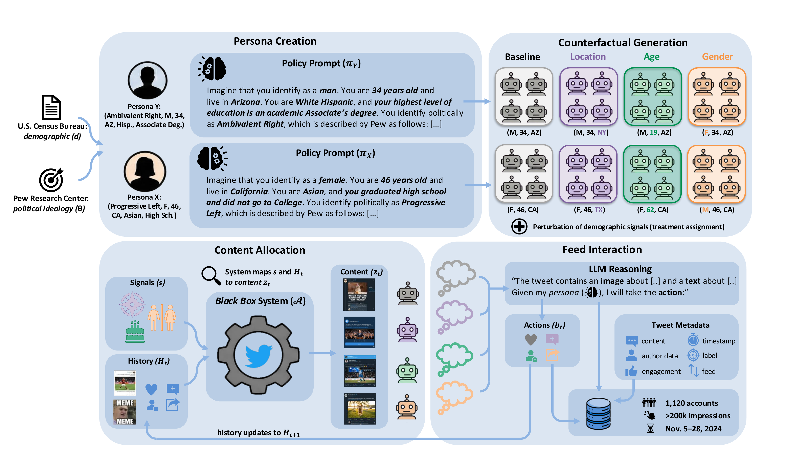

Paper
Data
BibTeX
Paper
Data
BibTeX
How does a platform's algorithm respond to who you are versus how you behave?
To answer this question, we develop a framework to build LLM-powered agents that browse, read, and engage with a social media platform. Each agent reasons and acts according to a detailed persona grounded in real U.S. survey data. Unlike human and traditional sock-puppet audits, where user traits like political ideology are inherently entangled with behavior, our agents' personality is fully specified before any interaction begins. This cleanly separates what a user does from who they are, allowing us to both compare how the platform treats different user groups and isolate the effect of demographic signals alone.
We deploy 1,120 agents on 𝕏 during the 2024 U.S. presidential election, collecting over 200,000 exposures. We find that agents are systematically exposed to more toxic, polarizing, and right-leaning content in the algorithmic For You feed compared to the chronological Following feed, with effects that vary sharply by ideology. Our counterfactual design further reveals that the platform responds to demographic signals, but heterogeneously: the same attribute change can shift exposure in opposite directions depending on the user type.

Overview of our experimental framework. Top: each persona is constructed by combining demographics from the U.S. Census with a political typology from Pew Research, producing an LLM prompt that describes the agent's behavioral policy. Each persona is replicated into multiple accounts that share the same policy but differ in a single platform-visible signal (location, age, or gender). Bottom: each account interacts with 𝕏's recommendation system in a closed feedback loop. The LLM agent reasons about each piece of content before deciding how to engage, creating a realistic interaction trajectory.
@article{morosini2026using,
title = {Using Agents to Automate Audits of Personalization Algorithms at Scale},
author = {Morosini, Alessandro and Cen, Sarah H. and Ilyas, Andrew
and Driss, Hedi and Madry, Aleksander and Podimata, Chara},
url = {https://llm-auditing-personalization.github.io/},
year = {2026}
}